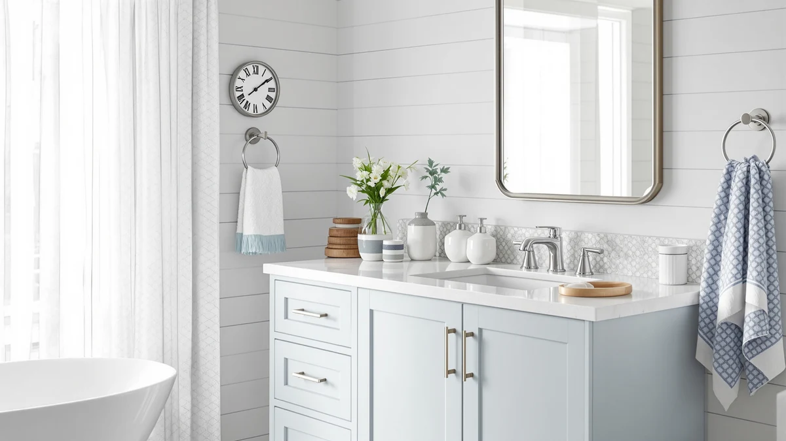

Spring Mill Cabinets Wyre Bathroom Vanity Review (2026): Worth It?
Prices and picks verified as of November 2026. Independent, reader-supported reviews.


Quick Answer
The Spring Mill Cabinets Wyre 18 is the pick to check first if your bathroom has less than 20 inches of wall space, thanks to its soft-close hinges and the cultured marble top included at $304.99. If you have more room to work with, the 36-inch alternatives below trade that compact footprint for extra drawers and a wider counter.
Our pick: Spring Mill Cabinets Wyre 18, $304.99 Check Price on Amazon
Bottom line: our top pick is the Spring Mill Cabinets Wyre 18 Inch Bathroom Vanity with White at $304.99.
Things to Know Before You Buy
- The Spring Mill Cabinets Wyre 18 is built for powder rooms and small bathrooms, at 18.5 inches wide versus 30 to 36 inches for the three alternatives in this review.
- All four vanities use MDF, also called engineered wood, which keeps pricing down but makes the cabinet more sensitive to standing water than solid wood over time.
- Pricing across this comparison sits in a tight band, $304.99 to $309.99, so size and storage matter more than cost when choosing between them.
- The Wyre's single-door cabinet trades storage for footprint; the DELUXE LIVING alternative adds four drawers if you need more capacity in the same price range.
- None of the four vanities publish a star rating or review count through the Amazon Creators feed, so we relied on listing specs and buyer comments instead of an aggregate score.
This Spring Mill Cabinets Wyre bathroom vanity review exists because small bathrooms and powder rooms rarely get the shopping attention that larger primary baths do, and shoppers hunting for an 18-inch vanity have fewer benchmarks to compare against. We looked at the Wyre's listing details, construction and current price against three similarly priced 30-to-36-inch vanities to see where the compact pick holds up and where its small footprint costs you storage. The short version: the Wyre earns its spot by fitting spaces the larger alternatives cannot, not by beating them on features.
We are not a testing lab, and we do not own any of these cabinets. Instead, we compared manufacturer specs, verified current Amazon pricing and patterns in buyer feedback to separate marketing language from what you actually get for around $305 to $310. That approach matters more for the Wyre than for a typical 36-inch vanity, since a compact cabinet trades storage capacity for footprint, and a spec sheet rarely spells out that tradeoff on its own.
Why You Should Trust Us
Ilane Tall covers bathroom vanities and fixtures for Best Bathroom Vanities, with a focus on reading past marketing copy in budget and compact cabinetry. For this Spring Mill Cabinets Wyre bathroom vanity review, she pulled the manufacturer's listed dimensions, materials and current Amazon pricing for the Wyre and three comparable vanities rather than relying on brand descriptions alone. Best Bathroom Vanities earns a commission when you buy through our links, but that relationship never decides which vanity we recommend, and we say so plainly when a listing's documentation is thin, as it is here.
Our Research Experience
We did not install the Spring Mill Cabinets Wyre or run water through its sink. For this Spring Mill Cabinets Wyre bathroom vanity review, our comparison work means reading every available product page for construction and hardware details, matching the listed 18.5-inch width against standard small-vanity openings, and cross-checking current pricing against the three alternatives covered below. We also read through the buyer comments attached to the listing, looking for complaints about the soft-close hinges or the cultured marble top rather than citing a star rating, since the listing does not publish one. That gap is worth naming directly: we are flagging missing review data instead of inventing a number to fill it.
Overview & Specs

Spring Mill Cabinets Wyre 18
What we like
- 18.5-inch width fits powder rooms and small bathrooms where a 30-inch vanity will not
- Six-way adjustable soft-close hinges let you true up the shaker door after installation
- White cultured marble top pairs with the gray cabinet without a separate countertop purchase
Flaws but not dealbreakers
- Single-door cabinet offers less storage than the 36-inch alternatives below
- MDF construction is less water-tolerant than solid wood over the long term
- No manufacturer-published rating or review count to verify durability claims
| Material | MDF / engineered wood |
| Size | 18.5" W x 16.68" D x 33.13" H |
The Spring Mill Cabinets Wyre 18 sits at $304.99 and is built around a single idea: fit a real sink and real storage into an 18.5-inch footprint. The cabinet is MDF with a gray finish, dressed in a shaker-style door front, and topped with a white cultured marble sink top that ships as one piece rather than as a separate countertop and basin you have to source and fit yourself. At 16.68 inches deep and 33.13 inches tall, it matches the depth and height most buyers expect from a full-size vanity, scaled down only in width to fit a tighter wall.
The hinges are the detail worth calling out in this Spring Mill Cabinets Wyre bathroom vanity review: six-way adjustable, soft-close hardware that lets you square up the door after the cabinet is bolted to an uneven wall, a common problem in older powder rooms and half baths. The tradeoff for the compact width is storage. A single door and no drawers means you are trading capacity for footprint, so a buyer replacing a pedestal sink gains real storage for the first time, while a buyer downsizing from a 36-inch vanity will lose some of what they are used to.
What We Liked
The clearest strength in this Spring Mill Cabinets Wyre bathroom vanity review is fit. At 18.5 inches wide, the Wyre slots into powder rooms and small bathrooms where a 30-inch or 36-inch vanity physically will not go, without forcing you into a pedestal sink that offers no storage at all.
The soft-close, six-way adjustable hinges also stand out against the other three vanities compared here. eclife and DELUXE LIVING both use soft-close hardware too, but the Wyre's adjustability makes it easier to correct for a wall that is not perfectly plumb, a detail that matters more in older homes than in new construction.
The cultured marble top is a small but real convenience. It ships attached to the cabinet, so you are not sourcing and fitting a separate countertop, sink basin and faucet deck the way you would with a vanity sold as a cabinet alone, which is how some of the 36-inch alternatives in this category are listed.
The three alternatives each bring their own version of this convenience. The eclife 36-inch vanity pairs its undermount sink with DTC-brand adjustable hinges and a matte black faucet deck already specified, so the finish hardware is decided for you rather than left as a separate purchase. The DELUXE LIVING 36-inch vanity goes further on the sink itself, with a solid-surface composite top the listing describes as more impact-resistant and easier to clean than a standard cultured marble slab. The Quicklock RTA vanity skips a sink top claim altogether and instead leans on a water-resistant, UV-coated interior and soft-close hardware, built and shipped flat-packed from a U.S. manufacturer rather than assembled overseas.
What Could Be Better
Storage is the real cost of the Wyre's small footprint. A single door with no drawers holds far less than the DELUXE LIVING's four drawers and two doors, so anyone used to a larger vanity will need to find storage elsewhere for everyday toiletries and cleaning supplies.
Like the other three vanities in this Spring Mill Cabinets Wyre bathroom vanity review, the Wyre does not publish a star rating or review count through the Amazon Creators feed, so we cannot point to a verified review tally. MDF construction also means the same long-term caution applies here as with the alternatives: keep an eye on caulking around the sink and address leaks quickly, since engineered wood is less forgiving of standing water than solid wood or marine-grade plywood.
The Quicklock alternative carries its own tradeoff worth flagging here too. Ready-to-assemble construction keeps shipping and manufacturing costs down, but it also means you are the one squaring up the cabinet and installing the hardware, rather than receiving a fully assembled unit like the Wyre. Buyers who are not comfortable with basic flat-pack furniture assembly should weigh that before choosing it over a pre-built option.
Who Is It For?
This Spring Mill Cabinets Wyre bathroom vanity review points to a specific buyer: someone with a powder room, half bath or small full bath who needs real storage in a footprint under 20 inches wide. It is a strong fit for anyone replacing a pedestal sink or a cramped builder-grade vanity without the budget or wall space for a full remodel.
It is a weaker fit for a primary bathroom where one person needs daily storage for toiletries, towels and cleaning supplies, or for any household planning to add a second user to that sink down the line. Buyers with more wall space should look at the 36-inch alternatives below, which trade the Wyre's compact footprint for drawers and a wider counter.
Alternatives to Consider
If your bathroom has more than 20 inches of wall space to spare, these three 30-to-36-inch vanities are worth comparing against the Spring Mill Cabinets Wyre before you decide.

Premium Choice
eclife 36" Bathroom Vanities with
A 36-inch step up with an undermount sink and a matte black faucet deck, for bathrooms that can spare the extra width over the Wyre.
$309.99
Check Price on Amazon
Premium Choice
DELUXE LIVING 36 Inch Bathroom
Four drawers and two soft-close doors give this 36-inch vanity far more storage than the Wyre, at nearly the same price.
$309.99
Check Price on Amazon
Premium Choice
Quicklock RTA (Ready-to-Assemble) | Bathroom
A 30-inch, made-in-America shaker vanity with a water-resistant UV-coated interior, for buyers who want more width than the Wyre without jumping to 36 inches.
$309.99
Check Price on AmazonIs the Spring Mill Cabinets Wyre 18 big enough for daily use?
The Wyre works well for a powder room or guest bath where one person uses the sink occasionally.
Does the Spring Mill Cabinets Wyre bathroom vanity come with the sink top included?
Yes.
Frequently Asked Questions
Is the Spring Mill Cabinets Wyre 18 big enough for daily use?
The Wyre works well for a powder room or guest bath where one person uses the sink occasionally. For a primary bathroom used daily by one or two people, the single-door cabinet and 18.5-inch width will feel tight once you add toiletries, towels and cleaning supplies.
Does the Spring Mill Cabinets Wyre bathroom vanity come with the sink top included?
Yes. The white cultured marble sink top ships as part of the cabinet, so you are not sourcing a separate countertop and basin the way you might with a vanity sold as cabinet only.
Should I buy the Wyre or one of the 36-inch alternatives?
Choose the Spring Mill Cabinets Wyre 18 if your bathroom has less than 20 inches of wall space or you are replacing a pedestal sink. Choose the eclife or DELUXE LIVING 36-inch alternatives in this review if you have the wall space and want drawers or a wider counter instead.
Final Verdict
This Spring Mill Cabinets Wyre bathroom vanity review comes down to footprint. The Spring Mill Cabinets Wyre 18 earns its place at $304.99 by fitting powder rooms and small bathrooms that the three 30-to-36-inch alternatives physically cannot, backed by soft-close, six-way adjustable hinges and a cultured marble top that ships ready to install. None of the four vanities compared here carry a verified star rating, so the decision comes down to wall space and storage: if your bathroom is tight, the Spring Mill Cabinets Wyre is the pick to check first; if you have more room, the DELUXE LIVING or eclife alternatives above trade that footprint for drawers and counter width.